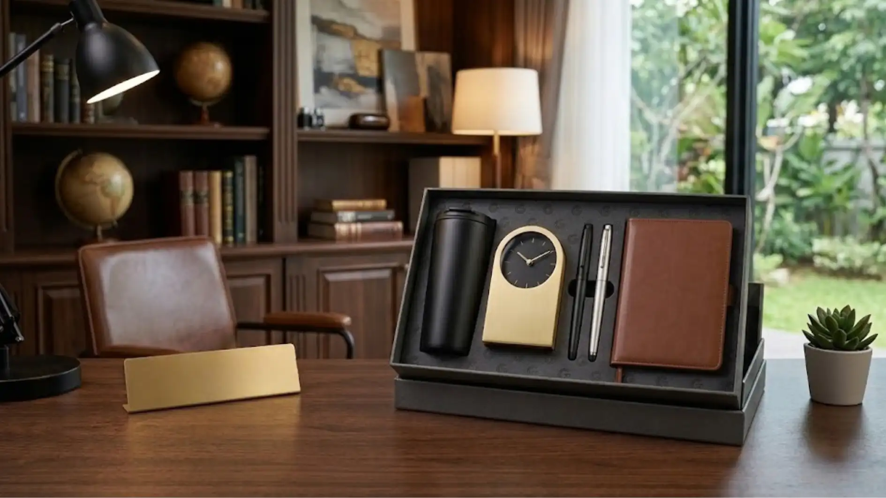

Merchandise kantor logo custom adalah barang-barang perlengkapan kerja yang dicetak atau digravir dengan logo perusahaan sebagai identitas visual resmi. Kategori ini mencakup beragam jenis produk, mulai dari alat tulis, set meja, mug, tumbler, hingga aksesori meja kerja lainnya yang sering digunakan oleh karyawan maupun dipajang di ruang kerja.
Apa Itu Merchandise Kantor Logo Custom?
Karena sifatnya yang fungsional, merchandise kantor logo cenderung digunakan dalam jangka waktu lama sehingga paparan logo perusahaan menjadi lebih konsisten dibandingkan media promosi sekali pakai. Merchandise ini umumnya diproduksi melalui proses custom, di mana perusahaan dapat menentukan desain, warna, bahan, hingga peletakan logo sesuai dengan pedoman identitas visual atau brand guideline masing-masing perusahaan. Proses custom ini penting agar hasil akhir benar-benar mencerminkan citra profesional yang ingin ditampilkan.
Untuk Siapa Merchandise Kantor Logo Biasanya Digunakan?
Merchandise kantor logo umumnya digunakan oleh perusahaan untuk beberapa kelompok penerima, yaitu karyawan internal, klien atau mitra bisnis, serta tamu pada acara resmi perusahaan. Untuk karyawan, merchandise ini sering diberikan sebagai bagian dari onboarding kit, penghargaan kerja, atau perlengkapan kerja standar yang seragam di seluruh divisi.
Untuk klien dan mitra bisnis, merchandise kantor logo biasanya diberikan sebagai bentuk apresiasi atau cendera mata saat pertemuan, kunjungan kerja, maupun penandatanganan kerja sama. Pada acara resmi seperti seminar, pelatihan, atau gathering tahunan, merchandise ini biasanya diberikan sebagai kenang-kenangan yang sekaligus memperkuat citra acara.
Mengapa Merchandise Kantor Logo Penting bagi Perusahaan?
Merchandise kantor dengan logo sangat penting karena berfungsi sebagai media branding jangka panjang yang secara konsisten menampilkan identitas visual perusahaan dalam kegiatan sehari-hari di tempat kerja. Ketika sebuah barang digunakan secara rutin, seperti pulpen, notes, atau tumbler, logo perusahaan yang tercetak pada barang tersebut akan terlihat berulang kali oleh penggunanya maupun orang di sekitarnya.
Pengulangan visual semacam ini secara umum membantu memperkuat pengenalan brand dibandingkan media promosi yang hanya dilihat sekali. Selain fungsi branding eksternal, merchandise kantor logo juga berperan dalam memperkuat identitas internal perusahaan. Karyawan yang menggunakan seragam kerja berlogo umumnya menunjukkan rasa memiliki dan kebanggaan terhadap perusahaan di mana mereka bekerja.
Apa Manfaat Merchandise Kantor Logo bagi Hubungan dengan Klien?
Manfaat utama merchandise kantor logo bagi hubungan klien adalah menciptakan kesan profesional sekaligus menjadi pengingat visual tentang perusahaan setelah pertemuan bisnis berakhir. Saat klien menerima merchandise berkualitas dengan desain rapi, hal ini secara umum turut membentuk persepsi positif terhadap kredibilitas dan keseriusan perusahaan.

Barang yang tetap digunakan klien dalam aktivitas kerjanya, seperti alat tulis atau desk organizer, akan terus mengingatkan mereka pada perusahaan pemberi merchandise, sehingga dapat mendukung keberlanjutan hubungan bisnis di masa depan.
Bagaimana Cara Kerja Pemesanan Merchandise Kantor Logo Custom?
Proses pemesanan merchandise kantor logo custom umumnya dimulai dari konsultasi kebutuhan, dilanjutkan pemilihan bahan dan desain, proses produksi, hingga quality control sebelum barang dikirim. Tahap awal biasanya melibatkan diskusi mengenai tujuan penggunaan merchandise, jumlah unit yang dibutuhkan, serta anggaran yang tersedia.
Setelah kebutuhan jelas, tim produksi akan membantu menentukan jenis bahan yang paling sesuai, apakah logam, kayu, bambu, atau kombinasi bahan lain, disesuaikan dengan karakter dan positioning brand perusahaan. Selanjutnya, desain logo akan disesuaikan dengan teknik cetak atau gravir yang paling sesuai untuk bahan yang dipilih, seperti ukiran laser untuk bahan kayu dan logam, atau sablon serta cetak digital untuk bahan lain.
"Konsistensi desain dan kualitas bahan adalah kunci agar merchandise kantor logo benar-benar mencerminkan citra profesional perusahaan, bukan sekadar barang cetak logo."
— Indriana Safitri, Penulis Merchandise Kantor
Bahan Apa Saja yang Umum Digunakan untuk Merchandise Kantor Logo?
Bahan yang umum digunakan untuk merchandise kantor logo antara lain stainless steel, kayu solid, bambu, akrilik, dan kulit sintetis, yang masing-masing memiliki karakter tampilan berbeda. Stainless steel sering dipilih karena kesan modern, tahan lama, dan mudah dirawat, cocok untuk produk seperti tumbler, gantungan kunci, atau alat tulis.
Kayu dan bambu banyak digunakan untuk menampilkan kesan hangat, natural, dan ramah lingkungan, umumnya diaplikasikan pada desk set, pen holder, atau plakat. Akrilik serta kulit sintetis sering kali dipilih untuk produk seperti holder nota, holder kartu identitas, atau folder dokumen karena kesan yang rapi dan profesional.
Apa Faktor yang Perlu Dipertimbangkan Sebelum Memesan Merchandise Kantor Logo?
Faktor utama yang perlu dipertimbangkan sebelum memesan merchandise kantor logo adalah tujuan penggunaan, target penerima, anggaran, kualitas bahan, dan konsistensi desain dengan identitas brand. Menentukan tujuan penggunaan sejak awal membantu perusahaan memilih jenis merchandise yang paling relevan, apakah untuk kebutuhan internal karyawan, apresiasi klien, atau souvenir acara.
Anggaran menjadi pertimbangan penting karena harga merchandise dapat bervariasi cukup luas tergantung bahan, teknik cetak, dan jumlah pemesanan. Kualitas bahan sebaiknya tidak dikorbankan hanya demi menekan biaya, karena merchandise dengan kualitas rendah dapat memberikan kesan kurang profesional dan berisiko cepat rusak.
Apa Kesalahan Umum yang Sering Terjadi Saat Memesan Merchandise Kantor Logo?
Kesalahan umum yang sering terjadi antara lain memilih bahan yang tidak sesuai fungsi produk, ukuran logo yang terlalu kecil atau terlalu besar, serta kurangnya waktu produksi yang memadai. Sebagian perusahaan memilih bahan hanya berdasarkan tampilan tanpa mempertimbangkan fungsi harian produk, misalnya memilih bahan yang mudah tergores untuk barang yang sering dipegang.
Selain itu, banyak perusahaan kurang memperhitungkan waktu produksi custom yang umumnya membutuhkan proses lebih panjang dibandingkan produk siap pakai, sehingga penting merencanakan pemesanan jauh sebelum acara atau kebutuhan mendesak.
Tips Memilih Merchandise Kantor Logo yang Tepat untuk Perusahaan
Perusahaan sebaiknya memilih jenis merchandise yang relevan dengan aktivitas kerja sehari-hari agar barang benar-benar digunakan, bukan hanya disimpan. Memastikan kualitas cetak logo tajam dan tidak mudah pudar juga penting agar kesan profesional tetap terjaga dalam jangka panjang. Bekerja sama dengan vendor yang memiliki pengalaman dalam produksi merchandise custom turut membantu meminimalkan risiko kesalahan produksi serta memastikan hasil akhir sesuai ekspektasi.

Kesimpulan
Merchandise kantor logo custom merupakan investasi branding jangka panjang yang menggabungkan fungsi praktis dengan kekuatan identitas visual perusahaan. Dengan memilih bahan yang sesuai, memperhatikan konsistensi desain, dan merencanakan proses produksi dengan matang, perusahaan dapat menghadirkan merchandise yang tidak hanya terlihat profesional, tetapi juga memberikan nilai tambah nyata bagi hubungan internal maupun eksternal.